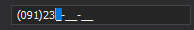

Input Mask
Input masks restrict user input and help ensure that values are entered in a valid format.
They guide users by enforcing a predefined structure while typing.
For example, you can apply a phone number mask such as (000)000-00-00, ensuring that only digits are entered in the required format.

Input masks are applied only when an editor is focused.
Masks are supported by all IInputEditor implementations.
Mask Types
Editors support multiple mask types. Each type defines how user input is validated and formatted.
You can use predefined mask expressions or create custom ones.
DateTime
Allows you to define masks for date and time values.
- Uses standard .NET date and time format strings
- Supports formatted input like full date/time, short date, etc.
Learn more:
https://learn.microsoft.com/en-us/dotnet/standard/base-types/standard-date-and-time-format-strings
Numeric
Restricts input to numeric values.
- Supports integers, floating-point numbers, currency, and percentages
- Provides built-in formatting and validation
Extended Regular Expressions
Provides advanced pattern-based input validation.
Use this mask type when you need to:
- Accept specific characters at fixed positions (for example, license keys)
- Support variable-length input (for example, email addresses)
- Allow multiple valid formats
- Enable auto-completion scenarios
Simple
Defines fixed-format input without alternatives.
- Best suited for structured values like phone numbers or ZIP codes
- Easy to configure and use
TimeSpan
Allows users to enter time interval values.
- Supports input for days, hours, minutes, seconds, and fractions
- Enables structured time duration entry
Simplified Regular Expressions
A simplified version of Extended Regular Expressions.
- Provides backward compatibility
- Easier to use for basic pattern scenarios
- Recommended only when full regex support is not required
Summary
- Input masks enforce structured and valid input
- Multiple mask types are available for different scenarios
- Use simple masks for fixed formats and regex for complex validation
- Apply masks through editor-specific mask properties